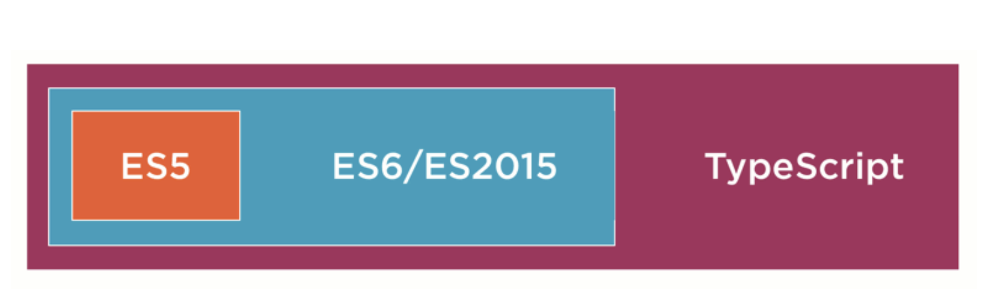

<div class="intro-wrap">
  <div class="intro-content">
    <div class="intro-markdown">
      <markdown ngPreserveWhitespaces>
        # Typescript
        Typescript是Javascript类型的超集，它可以编译成纯JavaScript。
        

        ### 特性
        ***

        1. Javascript是一种弱类型脚本语言。而Typescript是一种具有类型校验的弱类型脚本语言。（let x: number;）
        2. 相较于Javascript来说，具有类型校验特性的Typescript在构建大规模信息系统的开发中具有巨大优势。
        3. 拓展了诸如类（class）、接口（interface）、模块（Modules）、Lambda函数（=>）等。

        ### 示例
        ***

        #### 基础类型

        ##### 布尔值
        ```ts
        let isDone: boolen = false;
        ```
        ##### 数字
        ```ts
        let decLiteral: number = 6;
        ```
        ##### 字符串
        ```ts
        let name: string = "bob";
        console.log(`my name is ${{'{'}}name{{'}'}}`)
        ```
        ##### 数组
        ```ts
        let list: number[] = [1, 2, 3];
        ```
        ##### 元组 Tuple
        元组类型允许表示一个已知元素数量和类型的数组，各元素的类型不必相同。
        ```ts
        let x: [string, number];
        x = ['hello', 10];
        ```
        ##### 枚举
        enum类型是对JavaScript标准数据类型的一个补充, 使用枚举类型可以为一组数值赋予友好的名字。
        ```ts
        enum Color {{'{'}}Red, Green, Blue{{'}'}}
        let c: Color = Color.Green;
        ```
        ##### Any
        有时候，我们会想要为那些在编程阶段还不清楚类型的变量指定一个类型。 这些值可能来自于动态的内容
        ```ts
        let notSure: any = 4;
        notSure = "maybe a string instead";
        notSure = false;
        ```
        ##### Void
        某种程度上来说，void类型像是与any类型相反，它表示没有任何类型。 当一个函数没有返回值时，你通常会见到其返回值类型是 void：
        ```ts
        function warnUser(): void {{'{'}}
          console.log("This is my warning message");
        {{'}'}}
        ```
        ### 变量声明
        ***
        #### JavaScript
        一般在Javascript中我们通过    <font color="red">var</font>
        关键字定义JavaScript变量。

        ```js
        var a = 10;
        ```

        对于熟悉其它语言的人来说，var声明有些奇怪的作用域规则。 看下面的例子：
        ```js
        function() {{'{'}}
          if (shouldInitialize) {{'{'}}
          var x = 10;
          {{'}'}}

          return x;
        {{'}'}}
        f(true);  // returns '10'
        f(false); // returns 'undefined'
        ```
        变量 x是定义在*if语句里面*，但是我们却可以在语句的外面访问它。 这是因为 var声明可以在包含它的函数，模块，
        命名空间或全局作用域内部任何位置被访问,有些人称此为* var作用域或函数作用域*。这些作用域规则可能会引发一些错误。
        其中之一就是，多次声明同一个变量并不会报错。
        ##### 捕获变量怪异之处-下面的代码会返回什么?
        ```js
        for (var i = 0; i < 10; i++) {{'{'}}
          setTimeout(function() {{'{'}} console.log(i); {{'}'}}, 100 * i);
        {{'}'}}
        ```
        有些人期望输出是：
        ```js
        0
        1
        2
        3
        4
        5
        6
        7
        8
        9
        ```
        然而出结果是这样：
        ```js
        10
        10
        10
        10
        10
        10
        10
        10
        10
        10
        ```
        这是因为setTimeout在若干毫秒后执行一个函数，并且是在for循环结束后。 for循环结束后，i的值为10。 所以当函数被调用的时候，它会打印出 10！

        #### Typescript (let 声明)
        当用let声明一个变量，它使用的是词法作用域或块作用域。 不同于使用 var声明的变量那样可以在包含它们的函数外访问，块作用域变量在包含它们的块或for循环之外是不能访问的。
        ```ts
        function f(input: boolean) {{'{'}}
          let a = 100;

          if (input) {{'{'}}
          // 可以使用a变量
          let b = a + 1;
          return b;
        {{'}'}}

          // 报错，无法使用变量b
          return b;
        {{'}'}}
        ```

        当let声明出现在循环体里时拥有完全不同的行为。 不仅是在循环里引入了一个新的变量环境，而是针对 每次迭代都会创建这样一个新作用域。 这就是我们在使用立即执行的函数表达式时做的事，所以在 setTimeout例子里我们仅使用let声明就可以了。
        ```ts
        for (let i = 0; i < 10 ; i++) {{'{'}}
          setTimeout(function() {{'{'}}console.log(i); {{'}'}}, 100 * i);
        {{'}'}}
        ```
        会输出与预料一致的结果：
        ```ts
        0
        1
        2
        3
        4
        5
        6
        7
        8
        9
        ```

        #### and more...
      </markdown>
    </div>
  </div>
</div>
